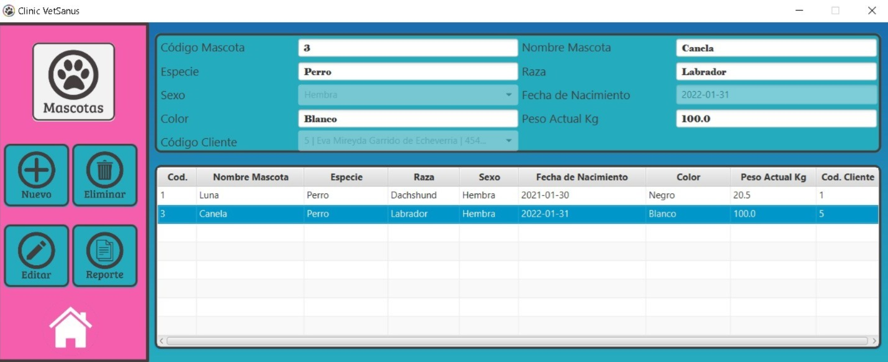
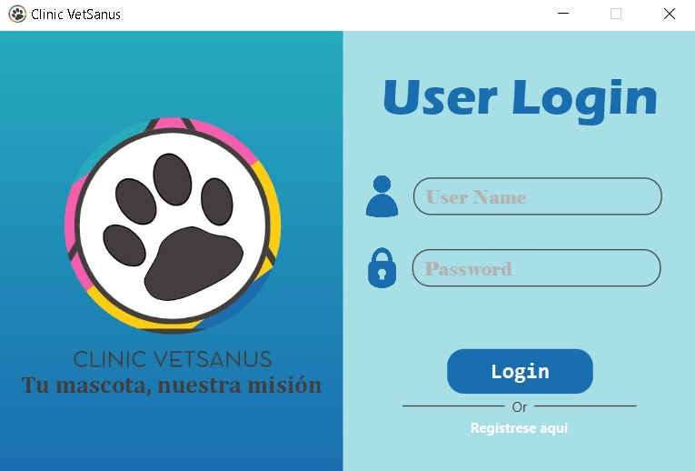
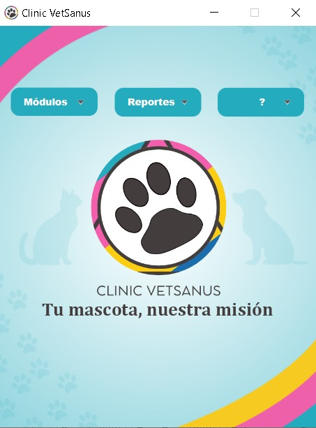
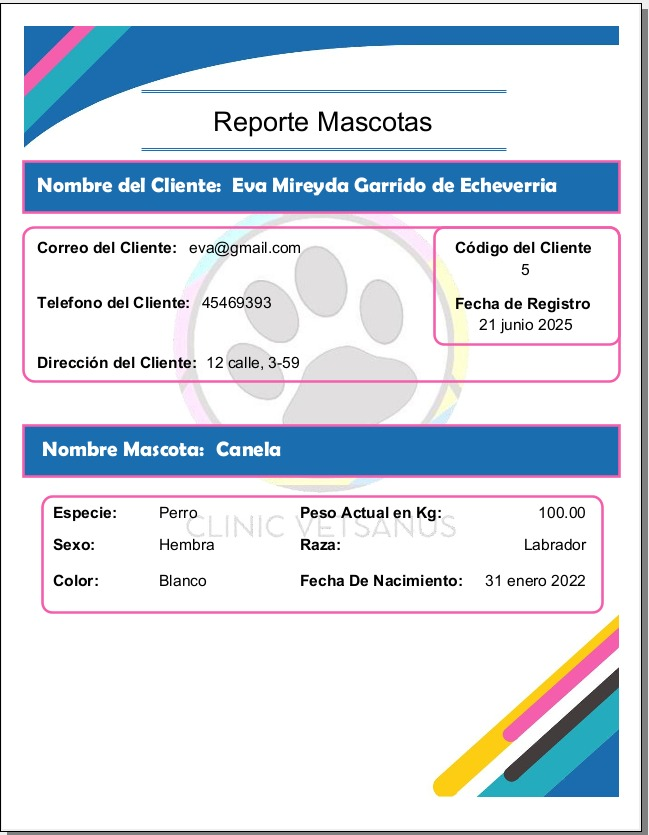

Sistema de Gestión Veterinaria
ClinicVetSanus: aplicación de escritorio en Java + JavaFX para digitalizar toda la operación de una clínica veterinaria, con reportes en PDF.

Contexto
ClinicVetSanus es un sistema de gestión para una clínica veterinaria que desarrollé como proyecto individual durante mi formación en el Instituto Kinal (2025). Una clínica maneja mucha información —dueños, mascotas, historiales, citas, facturación— y la idea era centralizarla toda en una aplicación de escritorio clara y con identidad propia.
El problema
Sin una herramienta adecuada, la información clínica y comercial se dispersa y cuesta consultarla. El reto era cubrir el flujo completo de la clínica —desde registrar un paciente y su dueño hasta agendar citas, dejar constancia de consultas y tratamientos, controlar las vacunas y emitir facturas y reportes— en una sola aplicación.
Mi rol
Fue un proyecto individual: lo diseñé y desarrollé por completo, de la base de datos a la interfaz, a lo largo de varios meses.
- Arquitectura MVC en JavaFX: modelos, controladores y vistas en FXML con estilos CSS.
- Capa de acceso a datos sobre MySQL, con una conexión Singleton mediante JDBC.
- Generación de reportes en PDF con JasperReports.
- Identidad visual del producto: logo, paleta y el lema «Tu mascota, nuestra misión».
La solución
ClinicVetSanus es una aplicación de escritorio construida con Java y JavaFX (vistas en FXML + CSS) bajo una arquitectura MVC. Los datos se guardan en MySQL a través de una conexión Singleton, y los documentos se emiten como PDF con JasperReports.
- Inicio de sesión de usuarios y un menú central con acceso a los módulos y a los reportes.
- Gestión (CRUD) de un dominio amplio: clientes, mascotas, veterinarios, empleados, proveedores, citas, consultas, tratamientos, recetas, vacunas y carné de vacunación, medicamentos, compras y facturas.
- Reportes en PDF listos para imprimir: carné de vacunación, listado de clientes y facturas.
- Cada módulo comparte un mismo patrón de pantalla —formulario, tabla y acciones— para una experiencia coherente.
Galería



Resultados y aprendizajes
El resultado es una aplicación de escritorio completa y usable, con identidad propia. Reforcé Java y JavaFX, el patrón MVC y el diseño de una base de datos relacional pensada para el día a día de la clínica; además di mis primeros pasos con la generación de reportes en PDF.
Si lo ampliara, añadiría un pool de conexiones, reforzaría la validación y el manejo de errores, y separaría más la lógica de negocio de los controladores de vista.